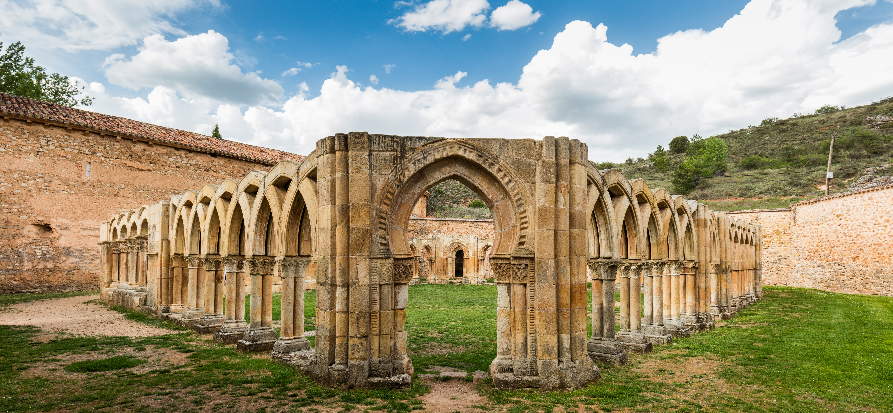
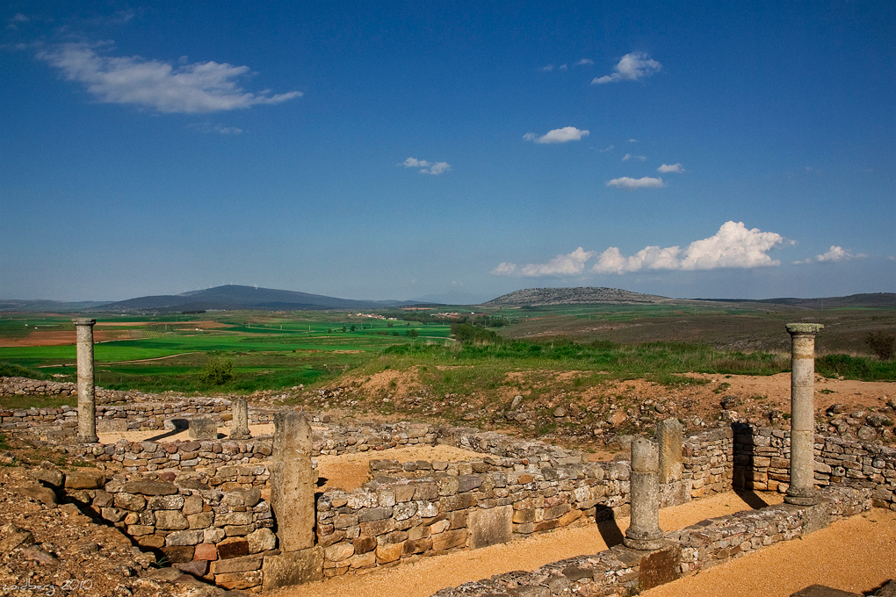
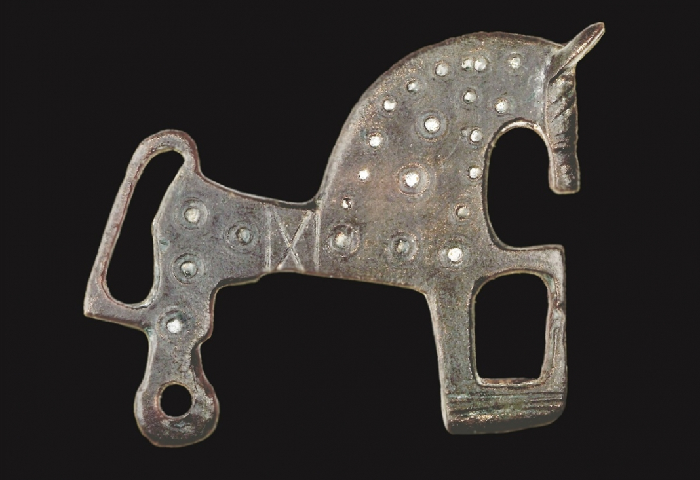

Donde la historia se funde con la leyenda
Ubicada a orillas del río Duero, Soria es una ciudad que invita a pasear despacio. Inspiración de poetas como Gustavo Adolfo Bécquer, Antonio Machado o Gerardo Diego, es famosa por su románico, su gastronomía y su calma.
Desde los imponentes arcos claustrales de San Juan de Duero hasta la emblemática ermita de San Saturio colgada sobre la roca del río, Soria conserva el encanto místico de las tierras altas de Castilla.


A escasos kilómetros de la capital actual se alzan los restos de Numancia, una heroica ciudad celtíbera que desafió al mismísimo Imperio Romano. En el año 133 a.C., tras más de una década de resistencia y un asedio implacable del general Escipión, sus habitantes prefirieron la muerte antes que la esclavitud.
Este hito forjó el mito de la "resistencia numantina", un símbolo de tenacidad, libertad y orgullo que hoy en día sigue corriendo por las venas de los habitantes de la provincia.
Si viajas por carretera en España y ves un coche con una pegatina de un pequeño caballo con tres patas apoyadas y círculos concéntricos, estás ante un soriano. Es el famoso Caballito de Soria.
Este icono es en realidad una fíbula (un broche o imperdible de bronce utilizado para sujetar la capa) de origen celtíbero, datada en el siglo III a.C. y hallada en las excavaciones del yacimiento de Numancia. Representa a un caballo, un animal con un fuerte valor sagrado y militar para los celtíberos. Hoy en día se ha convertido en el mayor amuleto de identidad de toda la provincia.

Si te has quedado con ganas de descubrir más sobre esta increíble provincia, te recomiendo echar un vistazo a los canales oficiales: